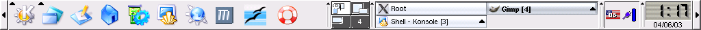
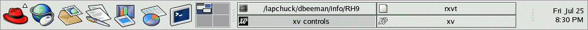

Introduction to UNIX or Linux and the graphical desktop
After you have logged in, you will be presented with a desktop showing
several icons and a panel that is similar to the Windows taskbar. It is
usually located at the bottom of the screen, but could also be located at
the top, or even one of the sides. Linux and its graphical interface, the X
window system, give a lot of choices and configuration options for the
desktop environment. The most commonly used desktops are the KDE desktop
and the GNOME desktop. The panel images that are shown below are from older
Linux versions, but illustrate the main features.
For KDE, the panel may look something like:

With GNOME, it might look like:

Some of the more important icons that you can click on are:
Getting around in UNIX and Linux
The commands that you type within a terminal window are interpreted by
a UNIX shell. Your account will have been set up to use a
particular default shell. The most common shell used with Linux is
bash, a variation of the Bourne shell sh. Some prefer to use
tcsh, a variation of the Berkeley C shell csh. All of these
shells recognize the same common commands described below for creating,
navigating, or copying files between directories (in Windows-speak, "folders").
When you first bring up a terminal window, you are placed in your home
directory. A few default configuration files with names starting with "."
have been set up for you, but otherwise your directory is empty. You can
get a listing of the current directory by using the ls command
(short for 'list'). This is like the DOS dir command, but you need
to specify some options (followed by a dash) to get details. To get a more
detailed listing including the "dot files", type "ls -lags".
To traverse to another directory you use the cd (change directory)
command. This command takes an argument of the directory you wish to
change to. Either an absolute or relative path argument can be specified.
Absolute paths begin at the "root" of the unix file system (/). Relative
paths begin from the currect working directory. For example, if you are in
your home directory, you can get to the next lower directory mail by
typing "cd mail". Typing "cd" by itself gets you to your
home directory. These shorthand symbols can be used to refer to commonly
used directories:
- ~ Your home directory.
- . The directory that you are currently in ("current working
directory").
- .. The directory immmediately above the current working directory.
To create a directory, use the mkdir command, e.g. "mkdir
myScripts". Note that file and directory names in UNIX are
case-sensitive. "myScripts" is not the same as "myscripts".
To print the name of the current working directory you can use the
pwd (Print Working Directory) command.
You can examine text files (such as all of our README files) using the
more command. This command will display a screenful of a lines at a
time. Pressing space bar displays the next bunch of lines, and pressing
"b" takes you back a screenful. Pressing "Enter" displays one additional
line. Pressing " ' " (apostrophe) returns you to the top of the file and
"q" will exit the more. For example, "more tutorial1.g" will
display the contents of the file "tutorial1.g", if it exists in the current
working directory. The "pipe" symbol " | " can be used to send
the output of one command into another. For example, try the command
"ls -lags ~ | more".
Other useful commands are rm, meaning remove or delete, as in
"rm junk.mail", and cp to copy one file into another, as in
"cp tutorial3.g ~/myScripts/tutorials". The "-r" option lets you
recursively copy a directory with its contents, including any subdirectories.
For example, if GENESIS is installed in /usr/local/genesis, to make your copy
of the genesis/Scripts/tutorials directory, you would type
cd /usr/local/genesis/Scripts
cp -r tutorials ~/myScripts
The mv command is used to rename a file or move it to a different
directory, instead of copying it.
The two most common text editors for UNIX are vi and emacs.
If you are not familiar with either editor, you may find it easier to learn
emacs. Here is a quick guide to using emacs.
For an even simpler text editor with built-in help, try pico
if it is installed. If you are using Linux with the KDE or GNOME desktop,
try kedit or gedit.
Documentation for most UNIX commands can be obtained with the man
command. For example "man ls" will tell you about all the options
for the ls command.
Most modern Linux distributions provide a variety of graphical email
clients. The standard command line program for reading email on UNIX
is called mail. You can find more about it with "man
mail". The pine program is much more user-friendly and
has built in help. The Firefox/Mozilla browser is also good for
reading mail.
http://www.linux.org/ is a good
source for information about Linux, with a collection of tutorials for
beginners. The Linux Documentation Project,
http://www.tldp.org/ is another good source for Linux documentation.
If most of this is new to you, now would be a good time to open a
terminal window and try out some of the commands described above.
 or
Terminal window - A console window that allows you to type commands
to the UNIX shell. In UNIX, this is one of the most important applications.
Once you get used to it, you will find that after learning a few cryptic
two-letter UNIX commands, you will get things done much faster than going
through many levels of sub-menus with a GUI. You will create and run
GENESIS simulations by giving commands in a terminal window.
or
Terminal window - A console window that allows you to type commands
to the UNIX shell. In UNIX, this is one of the most important applications.
Once you get used to it, you will find that after learning a few cryptic
two-letter UNIX commands, you will get things done much faster than going
through many levels of sub-menus with a GUI. You will create and run
GENESIS simulations by giving commands in a terminal window.
 Konqueror - A fast and
light-weight web browser provided wth KDE that is good for reading
documentation.
Konqueror - A fast and
light-weight web browser provided wth KDE that is good for reading
documentation.
 KDE help center - Provides
links to information about the KDE desktop environment, KDE applications
on the KDE start menu, the UNIX manual ("man") pages, and GNU "info"
documentation.
KDE help center - Provides
links to information about the KDE desktop environment, KDE applications
on the KDE start menu, the UNIX manual ("man") pages, and GNU "info"
documentation.